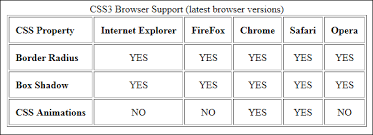

| Name | Surname | Favourite Sauce | Home Town |
|---|---|---|---|
| Naasik | Kaamish | Tomatoe | Hanover Park |
| Fatima | Hendricks | Chakalaka | Valhalla |
| Liam | Hendricks | Mayonaise | Lansdowne |
| Rasool | Booley | Chilli | Rondebosch |
| Taylor | Davids | Mustard | Bridge Town |
| Raasikh | Booley | Tomatoe | Athlone |
| Khanyiso | Haman | Chutney | Delft |
| Nathier | Manuel | Male | Lost City |
| Justin | Creighton | Peri-naise | Mtchelles Plain |
| Keanon | Erasmus | BBQ | Serepta |
| Tabile | Kume | Relish | Khayalitsha |
| Ebraheem | Seale | Male | Right |
| Marlon | Ford | 1000 islands | Grassy Park |
| Elizabeth | Pollard | Lemon and Herb | Claremont |
| Imraan | Meyer | Salad | Grassy Park |
| Nur | Brock | Curry | Kensington |
| Marco | Paulse | Prawn | Ottery |
| Michelle | Fortune | Characha | Brackenfell |
Tables are used for information of customers to a bank, they can be used to capture school childrens marks, it can also be used to capture account information in general and it can be used for creating time tables.
